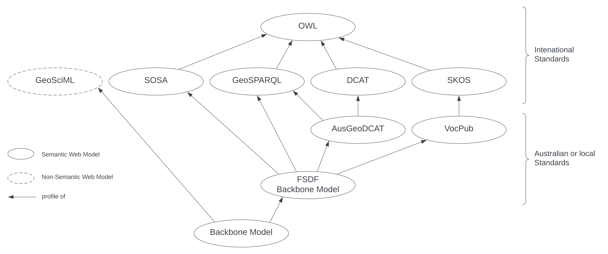

Background Models
Background Models are models that this Supermodel's Backbone Model and Component Models profile (inherit from).
Background Models may not be directly referred to by data created according to the Backbone or Component Models, however all data made to conform to this Supermodel must conform to all the Background Models.
Profile Hierarchy
The Background Models are inherited from by the Background Model, and thus the Component Models that inherit from it, in a hierarchical manner, as per the following diagram:
{kind=link}

Each of the models indicated in the hierarchy above are described, and this Supermodel's use of them is described, in the following section.
Models
GeoSciML
http://www.opengis.net/doc/geosciml/4.1
"GeoSciML is a model of geological features commonly described and portrayed in geological maps, cross sections, geological reports and databases."
This Supermodel uses GeoSciML indirectly: since GeoSciML is not a Web Ontology Language-based model, this Supermodel profiles GeoSciML be interpreting parts of its conceptual model into OWL Logical Models, such as the Borehole Model.
FSDF Backbone Model
https://linked.data.gov.au/def/fsdf-backbone
This model is a profile of Data Catalog Vocabulary (DCAT), GeoSPARQL 1.1, the Data Cube Vocabulary, the Sensor, Observation, Sample, and Actuator (SOSA) Ontology and the Vocabularies Publication Profile of SKOS (VocPub) used by the Australian Government to characterise Foundational Spatial Data Framework (FSDF) datasets.
This Supermodel ensures that all spatial datasets created according to it conform to the FSDF Backbone Model so that any dataset created for this Supermodel will work as an FSDF dataset too.
ANZGeoDCAT
https://linked.data.gov.au/def/anzgeodcat
ANZGeoDCAT is a profile of DCAT that constrains the representation of datasets' spatiality.
This Supermodel uses ANZGeoDCAT to represent all spatial datasets.
VocPub
The Vocabulary Publication Profile
https://w3id.org/profile/vocpub/spec
VocPub is a profile of SKOS that mandates certain SKOS object structures and properties for particular classes, such as metadata for ConceptScheme instances that help with the publication and management of classification vocabularies.
This Supermodel uses VocPub to characterise all classification vocabularies.
SOSA
Sensor, Observation, Sample, and Actuator Ontology
https://www.w3.org/TR/vocab-ssn/
"[Describes]...observations, the involved procedures, the studied features of interest, the samples used to do so, and the observed properties"
This Supermodel uses SOSA to link Result instances, which are data objects such as some chemical's rate of occurrence in a material to the Observation acts that produced them. The Observation indicates the Observable Properties characterised, such as amount of gold, wich it taken from a controlled list of geological properties known to be of interest in characterising geological features. Those features - rock units, stratigraphic zones etc. - are the Features of Interest which are the ultimate targets of investigation.
GeoSPARQL
http://www.opengis.net/doc/IS/geosparql/1.1
"...supports representing and querying geospatial data on the Semantic Web. GeoSPARQL defines a vocabulary for representing geospatial data in RDF. It also defines extensions to the SPARQL query language for processing geospatial data."
This Supermodel uses GeoSAPRQL to represent all spatial phenomena a Feature instances which may have geospatial representation as Geomentry instances. Features are grouped into FeatureCollection objects.
DCAT
Data Cataloguing Vocabulary
https://www.w3.org/TR/vocab-dcat/
"DCAT is an RDF vocabulary designed to facilitate interoperability between data catalogs published on the Web. This document defines the schema and provides examples for its use."
DCAT is used by this Supermodel to package up "chunks" of data into DCAT Dataset objects which are then associated with metadata using DCAT properties such as title, created date etc. and then listed in a DCAT Catalog.
SKOS
https://www.w3.org/TR/skos-reference/
"A common data model for sharing and linking knowledge organization systems via the Web."
SKOS is used for the representation of controlled lists of terms, sometimes known as thesauri or vocabularies.
This supermodel uses SKOS to represent vocabularies used for the classification of other objects, for example the theme of a Dataset which is indicated by its association with a Fields of Research Code. The vocabulary of FoR Codes is a SKOS Concept Hierarchy and each Code within it a Concept.
Web Ontology Language (OWL)
https://www.w3.org/TR/owl2-primer/
"[OWL] ...is an ontology language for the Semantic Web with formally defined meaning. OWL ontologies provide classes, properties, individuals, and data values"
This Supermodel and all the models within this profile hierarchy, except for GeoSciML, use OWL as their modelling language or system.
Models not in the hierarchy
The following models are not included in the profile hierarchy figure above to simplicity's sake but are nonetheless profiles by this Supermodel.
Profiles Vocabulary (PROF)
https://www.w3.org/TR/dx-prof/
"The Profiles Vocabulary is an RDF vocabulary created to allow the machine-readable description of profiles of specifications for information resources. It can be used to describe profile hierarchies wherein profiles of specifications may themselves have profiles indicated."
This Supermodel uses PROF to define the profiles hierarchy presented on this page and to relate the Supermodel's various parts to one another, with roles, such as this documentation having the role of specification and the SHACL validator the role of validation.
PROV
The Provenance Ontology
"[PROV] ...provides a set of classes, properties, and restrictions that can be used to represent and interchange provenance information generated in different systems and under different contexts."
This Supermodel uses PROV to indicate process flow, dependence and attribution between datasets, activities and the agents (people and organisations) involved with them.